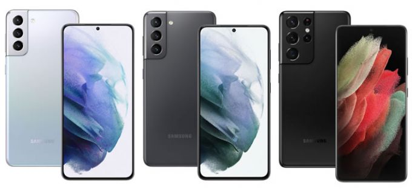

Новые флагманские смартфоны
Samsung представила флагманские смартфоны Galaxy S21, S21+ и S21 Ultra  — новинки получили стильный дизайн, большие интеллектуальные дисплеи, высокую производительность и (одна из самых важных фишек серии) обновленную камеру с несколькими объективами, которая поможет не упустить момент и решить любую задачу от съемки ночного пейзажа до эффектного портрета.
Камеры

Инновационные тройные камеры Galaxy S21 и Galaxy S21+ оснащены искусственным интеллектом и
выполняют всю работу
по созданию и обработке кадров самостоятельно, фронтальная камера с разрешением 10 Мп идеально подходит для
видеочатов и крутых селфи,
а основная — 64 Мп
(телефото), 12 Мп (широкоугольный) и 12 Мп
(ультраширокоугольный)
— для фиксации в фотопленке любого момента! Galaxy S21 Ultra Galaxy S21 Ultra при
этом получил четыре основные камеры:
сверхширокоугольную, широкоугольную и двойной телеобъектив, так что с такой 108 Мп камерой от тебя не уйдет
ни
одна деталь.
Без крутых встроенных функций у всех трех моделей линейки тоже не обошлось:
- режим Мультикадр с искусственным интеллектом создаст и подготовит к публикации лучшие кадры и
фрагменты в одно нажатие
- тебе достаточно просто навести камеру на предмет съемки, коснуться кнопки спуска затвора, и через несколько секунд смартфон предложит несколько вариантов снимков, видео и Gif в разной обработке и порекомендует самый удачный вариант.
- В портерном режиме с помощью 3D-анализа смартфоны предложат варианты освещения виртуальной «студии» и фоновые эффекты, которые помогут выделить главное на снимке
- усовершенствованная функция Space Zoom с Zoom Lock обеспечивает четкие и стабильные фото даже с большого расстояния, сохраняя точность передачи деталей при приближении до 30 раз.
Видео
Поклонникам видео пригодится Director’s View, позволяющий контролировать весь процесс съемки:
подбирать нужный ракурс, фокусироваться на объектах и мгновенно переключать камеры. О видеоблогерах в Samsung
тоже не забыли: в режиме Vlogger View съемка ведется с фронтальной и основной камер одновременно для записи
реакции на то или иное событие в реальном времени, а также предпросмотр Live Thumbnail, который
поможет изменить угол съемки, масштабировать и приближать видео, ничего не упуская. Плавную картинку с частотой
30 или 60 кадров в секунду даже при съемке быстро движущихся объектов и при тряске обеспечит
усовершенствованный режим стабилизации Super Steady, а новые профессиональные настройки — Highlight Video и
Dynamic Slow-Mo — сделают акцент на самых ярких моментах!
Смартфоны Samsung Galaxy S21 и Galaxy S21+ и Galaxy S21 Ultra поступят в продажу 5 февраля по ценам от 74 990
рублей, 89 990 рублей и 109 990 рублей соответственно. Пользователи, разместившие предзаказ, получат
возможность выбрать смартфон в эксклюзивном цвете, а также полезные подарки: беспроводные наушники Galaxy Buds
Pro и умный брелок Galaxy SmartTag при заказе Galaxy S21 Ultra или наушники Galaxy Buds Live и Galaxy SmartTag
при покупке Galaxy S21 или S21+. Подробности об устройствах — по ссылке.